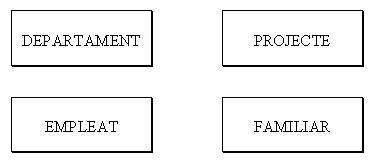
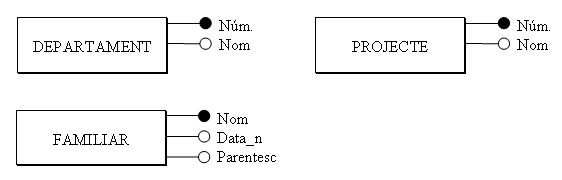

3. Las Entidades del Modelo E/R
Para hacer un esquema con el Modelo Entidad-Relación, empezaremos siempre por las primeras, por las entidades.
3.1 Entidades
Para hacer un esquema con el Modelo Entidad-Relación, empezaremos siempre por las primeras, por las entidades.
Es decir, a partir de las especificaciones del problema, intentaremos averiguar las entidades.
La ENTIDAD será una persona, cosa, lugar, concepto o suceso, con existencia real o abstracta, que nos es de interés.
Así por ejemplo, los empleados son entidades. Como todos los empleados tendrán para nosotros las mismas características (nombre, dirección,...), aunque cada uno con valores distintos, los podemos englobar en la misma estructura.
Definiremos TIPO DE ENTIDAD a la estructura genérica (EMPLEADO) y OCURRENCIA DE ENTIDAD a cada una de las realizaciones concretas (cada uno de los empleados, por ejemplo Juan Pérez). Evidentemente, en el diseño no nos interesan las ocurrencias, sino el Tipo de Entidad. Lo representaremos por un rectángulo con el nombre de la entidad en el interior (preferiblemente en singular).
Aplicación al ejemplo
En nuestro ejemplo, el del punto 2, quedarán las siguientes Entidades:

3.2 Atributos
Un ATRIBUTO es cada una de las características de una entidad que nos interesan.
Por ejemplo en la entidad EMPLEADO tendremos los atributos nombre, DNI, dirección, teléfono, sueldo y fecha de nacimiento.
No consideraremos atributos las características que no nos interesan (estatura, talla pantalones, etc.)
Una ocurrencia de entidad tendrá un VALOR para cada atributo, por ejemplo Juan Pérez, 18.901.234, 964-22.33.44, 1.200,00€., 12-5-1960.
Pero a veces puede que el contenido de un atributo sea el valor NULO (por ejemplo si no tiene teléfono o lo desconocemos).
Los atributos pueden ser SIMPLES o COMPUESTOS, si están formados por una única información o por más de una. Así, un ejemplo de atributo compuesto sería el nombre que podría estar formado por: nombre=(nombre de pila, primer apellido, segundo apellido).
Pueden haber atributos MULTIVALUADOS, que quiere decir que pueden tomar más de un valor. Por ejemplo supongamos que en el caso anterior consideramos el campo otros teléfonos (por si en la empresa hay momentos que tenemos que localizar al empleado urgentemente). Quizás un empleado no tenga ningún valor en este campo. Y quizás otro tenga dos (el móvil y el de una segunda residencia). En general huiremos de estos campos por comodidad, pero el modelo lo acepta.
También pueden haber atributos DERIVADOS, es decir, atributos que se pueden calcular a partir de otros. Podría ser el caso del campo edad, que se puede calcular a partir de la fecha del sistema y de fecha de nacimiento.
El modelo necesita poder identificar cada ocurrencia sin margen de error. Habrá algún atributo (o conjunto de atributos) que cumplirá esta premisa de identificar unívocamente. Y para que esto sea posible, este atributo deberá tener valores distintos para todas las ocurrencias (sino no podría identificarlas); y al mismo tiempo no podrá tener en ningún caso el valor nulo. En el ejemplo EMPLEADO, el nombre o el DNI servirían para identificar. En cambio el sueldo no serviría, ya que más de un empleado puede tener el mismo sueldo. El teléfono tampoco, porque quizás sea nulo.
A los atributos (o conjuntos de atributos) que cumplen la condición anterior los llamaremos CLAVES CANDIDATAS, y de entre todas las claves candidatas elegiremos una y la llamaremos CLAVE PRINCIPAL.
Todas las entidades deben tener una clave principal. Es una de las restricciones del Modelo E/R.
Representaremos los atributos con un círculo unido a la entidad por una línea, y en el interior o al lado pondremos el nombre del atributo. La clave principal la señalaremos subrayándola, o con el círculo negro.
Para los atributos multivaluados pondremos n en la línea. Y los derivados los representaremos con líneas discontinuas.
Aquí tendríamos dos maneras (absolutamente equivalentes) de representar la entidad EMPLEADO con sus atributos.
 |
 |
|
|---|---|---|
Aplicación al ejemplo
En nuestro ejemplo del punto 2 quedarían las otras entidades con los siguientes atributos:

Licenciado bajo la Licencia Creative Commons Reconocimiento NoComercial CompartirIgual 3.0